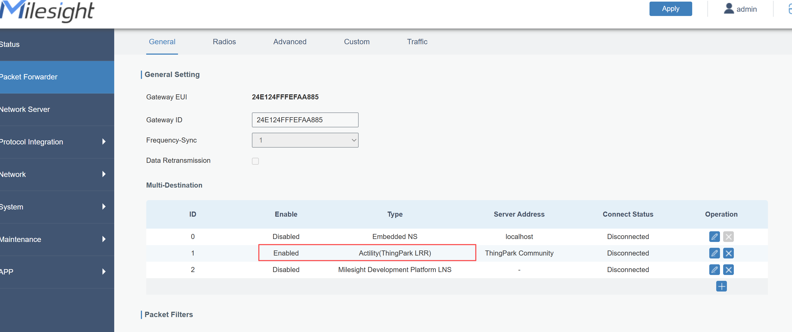
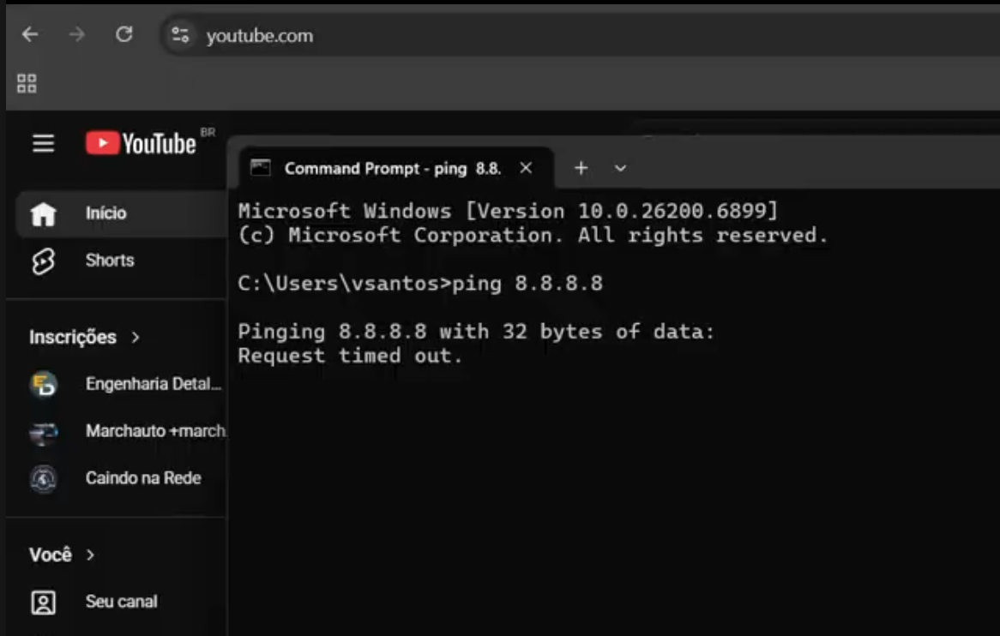
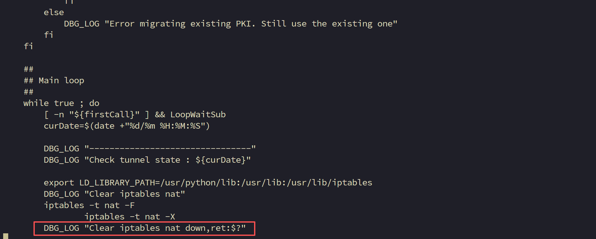
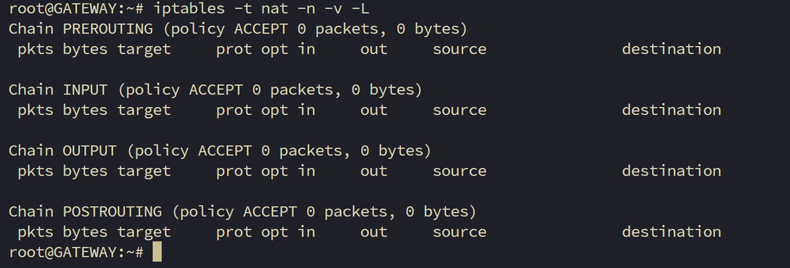
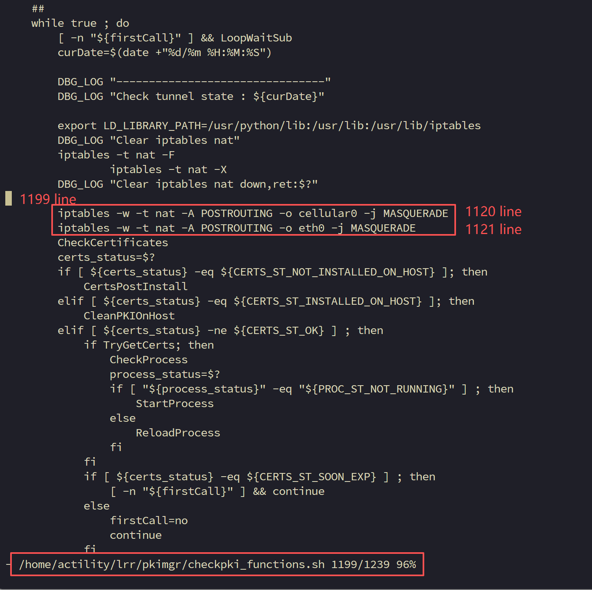
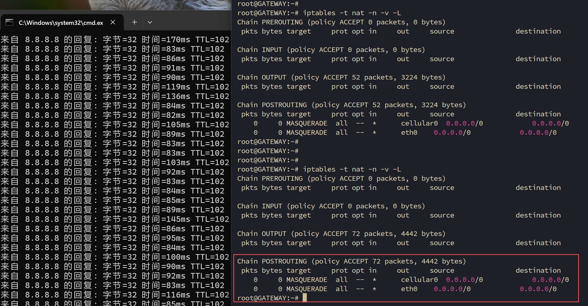

Troubleshooting the AP client is unable to access the Internet when the gateway has Actility functionality enabled

Troubleshooting: Troubleshooting: The AP client is unable to access the Internet when the gateway has Actility functionality enabled
.
| Version | Update Time | Description | Author |
| 1.0 | May 19, 2026 | Initial version | Aurora |
Description
This article will guide you through troubleshooting the issue where the AP client is unable to access the Internet when the gateway has Actility functionality enabled.
Problem：
When the Actility feature is enabled on the gateway, AP clients connected to the gateway’s Wi-Fi are unable to access the Internet through the gateway.


Root Cause:
After Actility is started, the gateway configuration will be updated according to the settings in the Actility startup script, and the iptables rules of Nat table will be cleared.


Solution:
Step 1：Edit the Actility script file on the gateway. Locate line 1199 in the file and add following iptables rules below this line:
vim /home/actility/lrr/pkimgr/checkpki_functions.sh

After making the changes, save the file. This should resolve the issue.

----END----